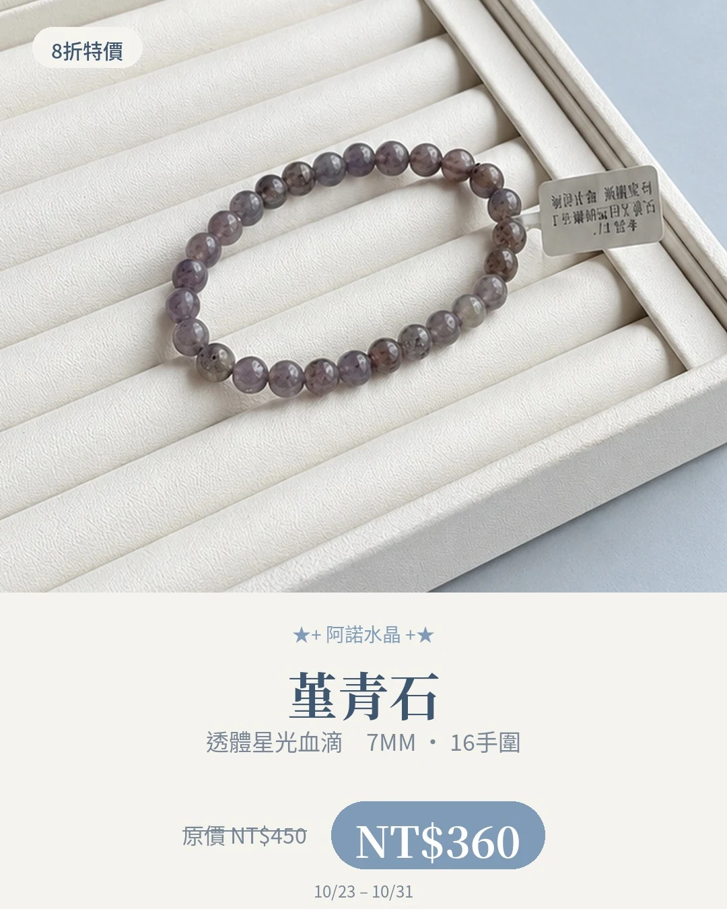
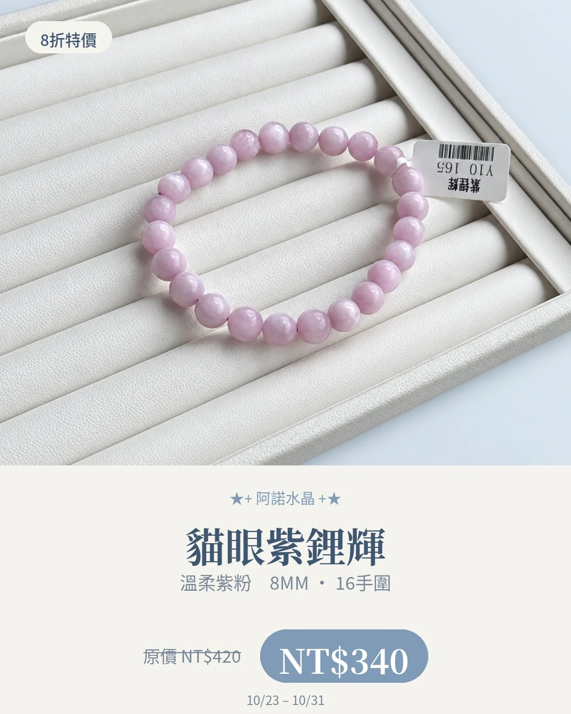
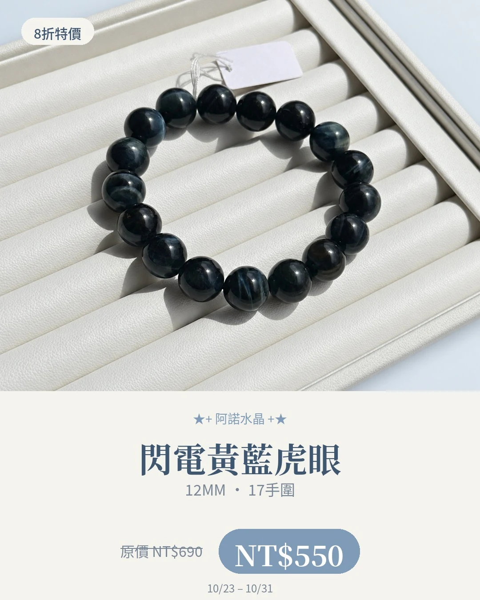
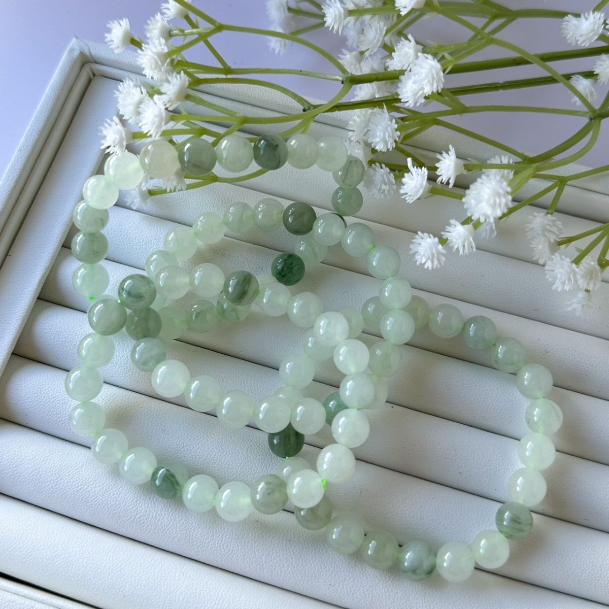
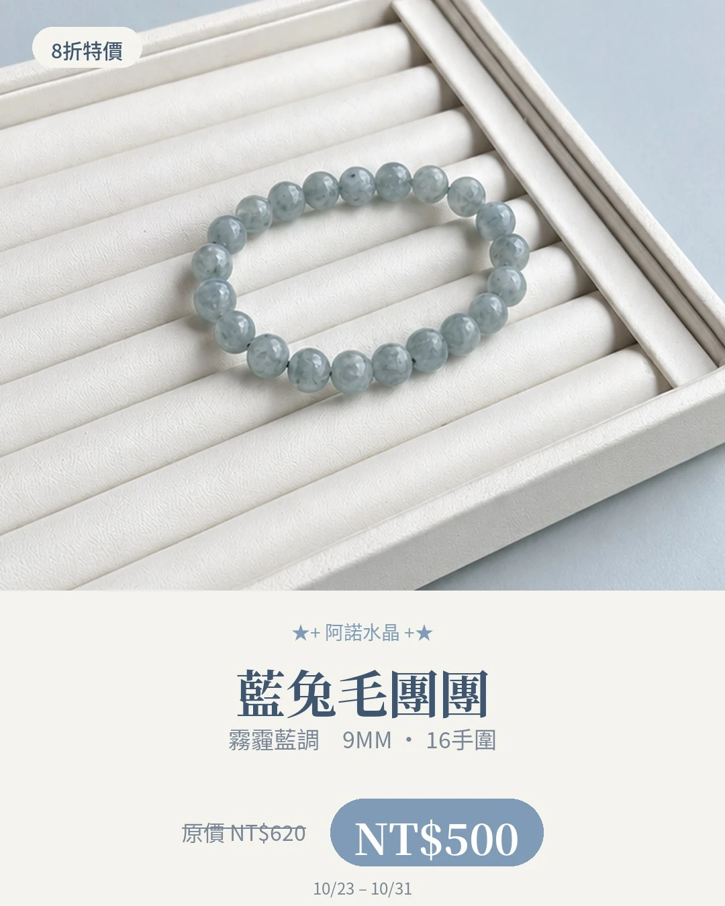
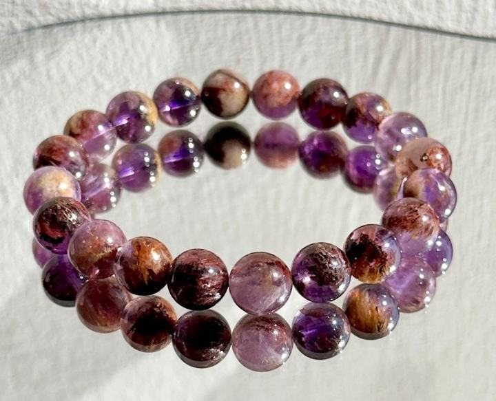
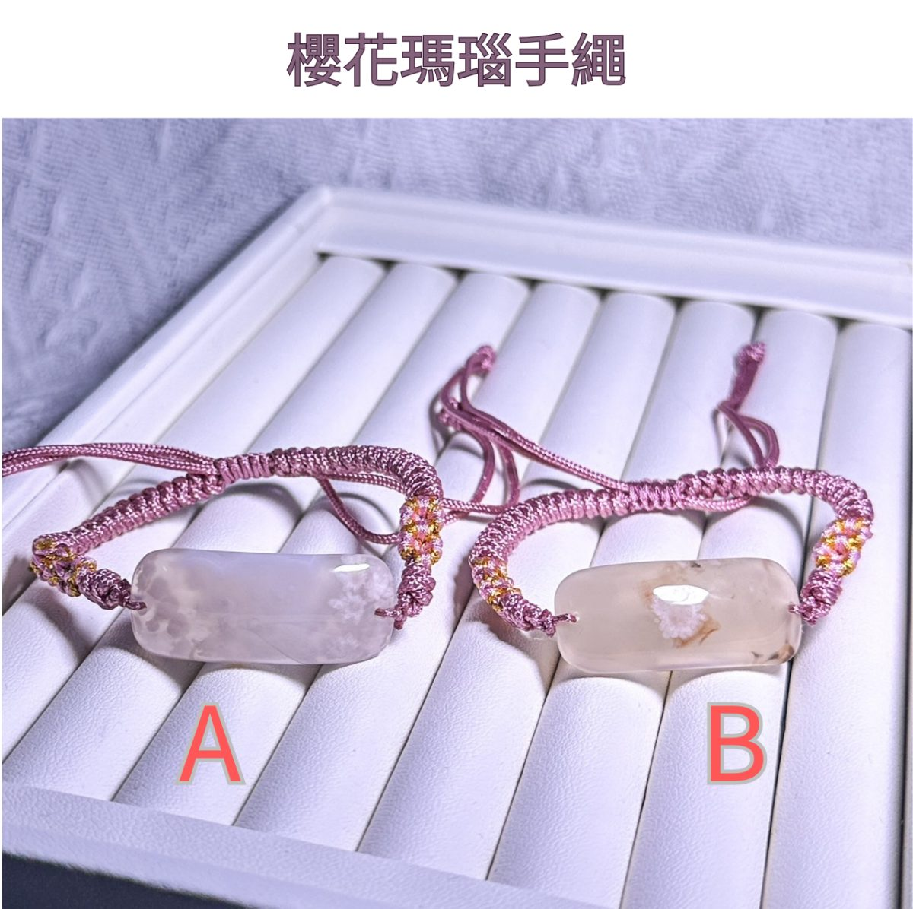

從喜歡的顏色，慢慢認識礦物
阿諾的水晶介紹
天然的礦物，不該只有等級的區分。一起看看不同顏色、紋理與特色，找到能融入自己日常的樣子。
每頁整理礦物背景、故事寓意、搭配與保養，並連回官網款式。商品名不一定等於礦物學名稱；資料不足的款式，會保留說明而不猜測。
 天河石Amazonite
天河石Amazonite 海藍寶Aquamarine
海藍寶Aquamarine 紫水晶Amethyst
紫水晶Amethyst
堇青石Iolite
紫鋰輝石Kunzite 石榴石Garnet
石榴石Garnet 碧璽Tourmaline
碧璽Tourmaline 彩色摩根石Pastel beryl selection
彩色摩根石Pastel beryl selection 月光石Moonstone
月光石Moonstone 拉長石Labradorite
拉長石Labradorite 金太陽Sunstone
金太陽Sunstone 翡翠Jadeite jade雙色螢石Fluorite
翡翠Jadeite jade雙色螢石Fluorite 藍晶石Kyanite
藍晶石Kyanite
閃電黃藍虎眼Tiger’s-eye quartz 白水體草莓晶Strawberry quartz
白水體草莓晶Strawberry quartz 漸變綠草莓晶Green inclusion selection
漸變綠草莓晶Green inclusion selection 阿拉善Alashan selection
阿拉善Alashan selection 桃花釀 佘太翠Shetai-jade selection
桃花釀 佘太翠Shetai-jade selection
天山翠Tianshan-cui selection
藍兔毛團團Blue cloudy selection 銅髮晶Copper-toned inclusion selection
銅髮晶Copper-toned inclusion selection
 紫幽靈與星輝骨幹Inclusion & growth selection
紫幽靈與星輝骨幹Inclusion & growth selection 阿魯沙手排Arusha selection
阿魯沙手排Arusha selection
櫻花瑪瑙Flower-like agate selection 女王貝Shell jewelry
女王貝Shell jewelry 飾品與福袋Jewelry selection
飾品與福袋Jewelry selection礦石寓意與能量相關內容整理自網路資料，僅供介紹參考，並非科學功效或效果保證。